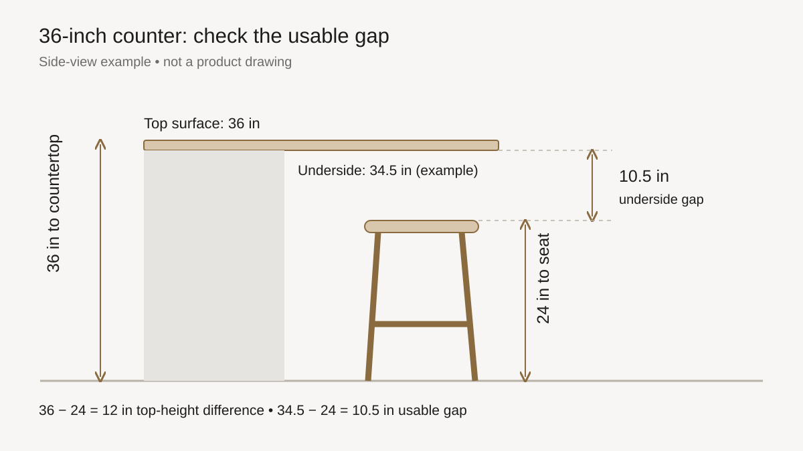

Measure before you buy
What Height Stool for a 36-Inch Counter?
Published
Start with a counter-height stool with a seat 24–26 inches (61–66 cm) above the floor. A 30-inch bar-height seat is usually too tall for a 36-inch counter. Before ordering, measure the underside of your counter: the height printed on the stool listing alone does not tell you how much room your legs will have.
This guide separates the countertop-height comparison from the actual gap beneath the counter. The table below is calculated for a 36-inch top; it is a buying starting point, not a guarantee of comfort for every person.

Seat-height chart for a 36-inch counter
| Seat height | Difference to countertop | Buying interpretation |
|---|---|---|
| 24 in / 61 cm | 12 in / 30.5 cm | A useful starting point; check the underside separately. |
| 25 in / 63.5 cm | 11 in / 28 cm | Within the starting range; compare the usable gap. |
| 26 in / 66 cm | 10 in / 25.4 cm | Within the range, but a thick top or rail can reduce legroom. |
| 27 in / 68.6 cm | 9 in / 22.9 cm | Some manufacturers include this height; do not assume it fits your underside. |
| 30 in / 76.2 cm | 6 in / 15.2 cm | Usually too tall for this counter; intended for a taller surface. |
Wayfair recommends 24–26-inch seats for a 36-inch counter; Nathan James gives a broader 24–27-inch range. That difference is a reason to measure, rather than buy from the “counter stool” label alone. See the source links below.
Measure two heights, not one
- Countertop height: measure from the finished floor to the top where you eat. Confirm that it is actually 36 inches.
- Lowest obstruction: measure from the floor to the underside at the seating position. Include a lower rail, apron, bracket, or drawer if it occupies the space your legs need.
- Seat height: use the floor-to-seat measurement in the product specification. Do not use the height to the top of the backrest.
- Usable vertical gap: subtract seat height from the underside height. Wayfair uses approximately 10–12 inches beneath the counter as a comfort guideline; body size and posture still matter.
- Tuck-away fit: if the stool has arms, compare arm height with the underside too. A suitable seat height does not guarantee that the arms slide underneath.
For a padded seat, confirm how the manufacturer measures the seat height. A cushion can compress when occupied, but do not invent a compression allowance from a photograph.
A thick countertop can change the decision
Consider an illustrative counter with a 36-inch top and a 34.5-inch underside:
- A 24-inch seat leaves 10.5 inches beneath the underside.
- A 26-inch seat leaves 8.5 inches beneath the underside.
Both seats appear in the common 24–26-inch starting range, but the usable gap differs by two inches. If a lower rail makes the underside only 32 inches high, even the 24-inch seat leaves just 8 inches. In that situation, check the design and try a comparable seat before ordering; a standard-height label cannot resolve the obstruction.
Vertical clearance is only one part of fit. Also check the overhang depth, the stool’s footprint, access behind the seat, and the footrest position. This page does not calculate how many stools fit along an island.
Frequently asked questions
Is a 26-inch stool too tall for a 36-inch counter?
Not automatically: the difference to the countertop is 10 inches. But that is not the gap to the underside. A thick top or lower rail may make it tight. Measure the underside and compare it with the seat height before choosing.
Can I use a 30-inch bar stool at a 36-inch counter?
It usually leaves too little room: only 6 inches to the top, and less to the underside. Look for a counter-height version instead, unless a manufacturer provides a specific fit recommendation for your setup.
Should I measure the seat or the backrest?
Use floor-to-seat height to compare sitting height with the counter. Overall height includes the backrest and answers a different question about the stool’s appearance and storage.
Will a counter-height stool fit every 36-inch kitchen island?
No. Underside obstructions, arm height, the overhang, stool footprint and the person using it all affect fit. “Counter height” is a product category, not a fit guarantee.
Sources and method
Source specifications checked on October 4, 2026. The starting range comes from the guides below. Table differences and the diagram are our own arithmetic and illustration; they are not measurements of a particular product.
- Wayfair: Bar Stool Dimensions — 36-inch counter recommendation and underside-clearance guidance.
- Nathan James: Linus stool and manufacturer height guidance — 24–27-inch counter-height range.
We use 1 inch = 2.54 cm; metric values are rounded. Confirm current product dimensions before ordering.